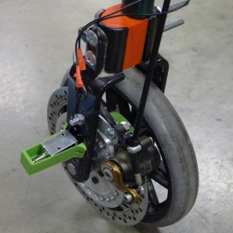
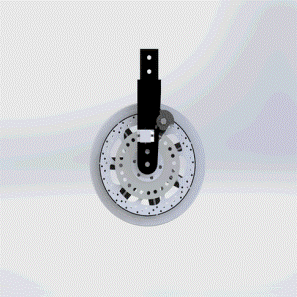

GroundBraker
New innovative braking system for mobility aids.
Developed in association with MISA as part of a undergraduate group design project.
Project Brief
Design a product to aid the ageing population.
At the beginning of this project we were given a very broad project brief , to design something
to aid the ageing population of Ireland. This gave us the freedom to go out and talk to our user
base to find out what their problems were so that we could engineer a solution for them. I got
us to engage with our entire stakeholder base from doctors and nurses, to the ederly and their
carers to find the real problems in their life that needed fixing.
The problem that we identified was reliability of mobility aid brake.,They would often wear down
to the point that they could no longer provide support for user and care facilities were
spending a lot of money throwing old mobility aids out as there was no easy way replace them.
.
Solution
Two systems. Dynamic disc braking. Smart parking brake.
The dynamic braking system was based off the disc brakes found on mountain bikes. The benefits
were two fold, it both reduced the force required to apply the brakes dramatically and made it
easier to replace them.
The Smart braking system solved the slipping problem. Th milled surface of the disc would guide
the pin into the hole locking the wheels in position and the brake was activated by a large
ergonomic button with safety sensors in place to prevent accidental deployment.
Design Development

Mechanical design of the system began by creating a full 3D model. For purposes of the
prototype we were adapting the braking system of an old mobility so spacers had to be
manufactured to allow for the installation of the new disc brakes (retrofitted from
a bicycle). Most of the new parts were 3D printed apart from the parking brake components
which were milled out of aluminium to ensure their strength.
Finite Element Analysis was also performed on the systems to ensure that the new parts would
not break under normal operating conditions.

An Arduino was used as the controller for the parking brake system. It operated two solenoid
actuated pins that upon activation would engage with the wheel and stop the mobility aid. As
a safety precaution a motion sensor was added in the form of a hall effect sensor and magnet
inset into the wheel that could sense if the aid was move and stop the parks from deploying.
The system also used the inbuilt EEPROM to stored the last brake state so that in the case
of a power outaged the brake would not disengage suddenly.
Throughout the whole design process to the user and their needs were kept at the forefront
of out thoughts. With each change or new feature we added we tested it with our endusers,
ensuring that all of our choices were well informed.

Reflections
This was the first truly open ended project that I had engaged with and I thoroughly enjoyed the
experience. It gave me my first taste of working as part of a design team and all the issues
that come with it such as dealing with lead time, group communication, effectively presenting
your work and dealing with stakeholders.
The project was also a steep technical challenge for me as I took on developing most of the
project's electronics and software. A task that I found quite challenging given that I had
little formal training in the subject but made it more rewarding once I made something work !